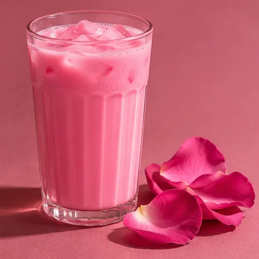

Bandung Rose Milk Drink
Milk and rose essence give Bandung its creamy floral character.
Formats · 250 mL carton · 300 mL can · 380 mL bottle
Source ↗
Desk reference / Singapore
A floral tea brewed with Hang Bai Ju chrysanthemums.
Formats · 250 mL carton · 300 mL can · 380 mL bottle · 1.5 L bottle
Source ↗
A green tea brewed from the first spring buds.
Formats · 250 mL carton · 300 mL can · 380 mL bottle · 1.5 L bottle
Source ↗
A light fruit drink with a sweet lychee flavour.
Formats · 250 mL carton · 300 mL can · 380 mL bottle · 1.5 L bottle
Source ↗
Whole soy beans give the drink its smooth texture.
Formats · 250 mL carton · 300 mL can · 380 mL bottle · 1 L carton
Source ↗